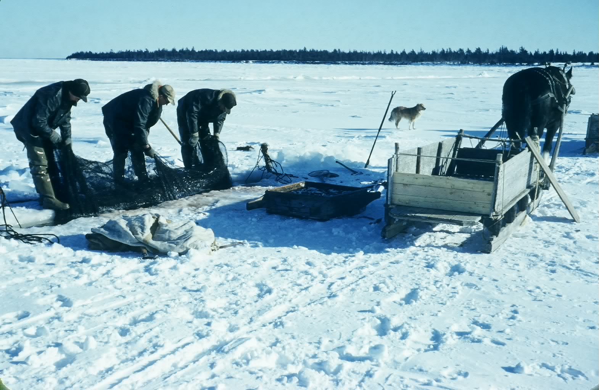
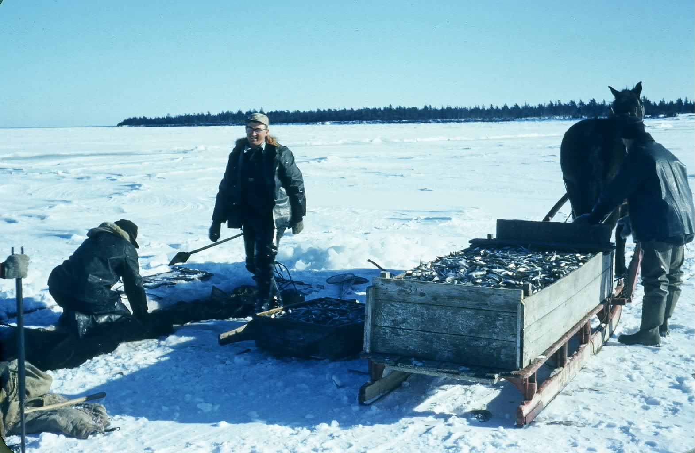

The Family Chronicle
No. 141 May 26, 2007
____________________________________________________________________
Smelt Fishing


Above we see Bill Taylor (standing) with Eldred and Cameron Russell tending their fishing nets off the Point Aux Carr shore. The exact year is unknown, however, it would be around 1950. Although my family did not fish, here is my under- standing of how winter smelt fishing with box nets worked.
Smelt fishermen on the Miramichi still set box nets, usually double, through the winter ice in the same way as they have for perhaps 100 years or more. While the fishing method is the same, “Old Dobbin” has been replaced by snowmobiles and four wheelers.
A box net, as the name suggests, is a rectangular box about 14 feet wide and fifty feet long; the depth varies depending on the depth of the water. The mesh is slightly under an inch compared with a salmon net where the mesh is about five inches.
A flat piece of netting, called a leader, juts out from each side of the net for a distance of 100 feet. Since smelts swim against the current, the leader is placed across the current and helps guide fish into the net. Fish come to the leader and, if they turn the right way, in attempting to swim around the net find themselves trapped in the “box” part of the net. The net is designed for easy entrance; once inside, however, it is almost impossible for a smelt to swim out. The entire net is placed under the ice.
The photos show a slot, a smelt hole, in the ice up to 14 feet long and maybe 15 inches wide. Smelt holes were cut using an ice saw, now a chain saw, and kept clear with a chisel as needed.
The centre of the box net is placed directly under this hole and, anchored to toggle sticks, a forked stick frozen into the ice close to the smelt hole.
The outer ends of the net also need to be anchored. First a small hole is cut in the ice out from each corner of the extended net and a toggle stick frozen nearby. A rope is tied to each outer corner of the net and the loose end of the rope is pushed under the ice to one of the outlying holes with the aid of a running pole, a long slender pole usually made from two or more small slender trees fastened together. The ropes are pulled up and tied to the toggle stick nearby. These ropes are tightened to set the net and slackened when the net is being fished. The result is a huge box suspended under the ice with a leader extending about 100 feet out each side.
Nets were usually pulled twice a day – at the turn of the tide. First the wooden cover is removed and the new ice is cleared from the holes. Then two of the ropes on the toggle sticks are slackened to allow one side of the net to be pulled up through the slot. The bunt, the end of the net tied like the top of a potato bag, is opened and the smelts dumped out. After emptying, the net is put back in the water and the ropes tightened. The operation was repeated to empty the other side of the net. The top photo shows the three men pulling the net.
On the ice beside the sled, the reader can see a small box perhaps 3 feet square, with handles, not unlike a sieve for screening pebbles from sand; the bottom is covered with wire. Smelts were emptied into the box and the water drains off. In below zero temperatures, the fish soon freeze. To keep them from freezing into one solid lump, the box is lifted and shaken a few times. Two men pick up the box and tip the smelts into the sled. I estimate the sled in the photo to contain about 650 pounds of smelts.
Once one sled was loaded, the horse would be moved ahead and another horse with an empty sled would take its place.
Depending where one fished, a buyer would either come out on the ice or meet fishermen when they came ashore to purchase their smelts.
Uncle Jim Watling was a buyer for the W.S. Loggie Company of Chatham; A & R Loggie Company of Loggieville was another major buyer. He bought from the fishermen, brought the smelts to his shed and spread them out on the shed floor to keep them frozen. Later, Loggie’s truck would come to Uncle Jim’s, and to other buyers, and pick up the day’s catch. The fish were taken to the company freezer, repacked and shipped to market, especially the US market.
Although the above photos were taken close to Cameron Russell’s shore, fishermen also went far out into the bay to fish and stayed near their nets all week. They took with them a hovel for the horse and a shanty for themselves, usually two men. On Friday night or Saturday they lifted their nets and came home for the weekend returning again to the ice on Sunday evening.
Sometimes, usually in late winter, the ice would run, meaning that the ice would move in the Bay. In such cases, the men would drop their nets to the riverbed so that the nets would not be lost nor ruined by dragging across the ocean bottom. Nets at the time this photo was taken were made of hemp/sisal/jute (I believe it was all roughly the same) and would sink; today’s nets would have to be weighted down. Later when the ice stabilized, the fishermen would return to the spot where their nets were dropped, cut holes in the ice, grapple for their nets and, when found, start all over.